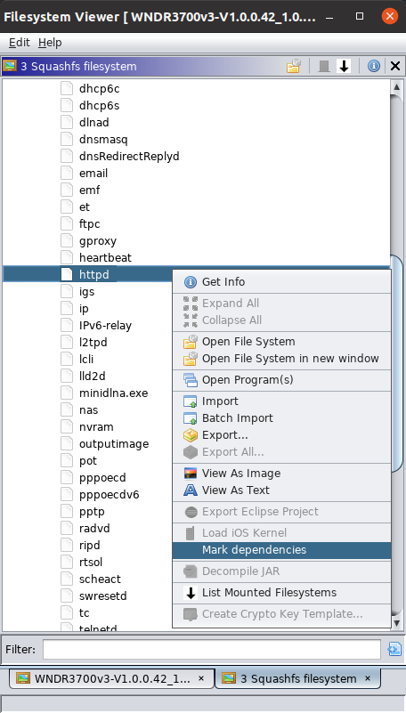

The Firmware Plugin adds a couple new filesystems for working with firmware. These will be described next.

Binwalk is one of the most important tools in the toolbox of a firmware analysist. Firmware usually come in big blobs of bytes containing all sorts of things such as weird headers, boot loaders, operating system kernels, root filesystems, configuration files and what have we.
Running binwalk on such a blob will tell you to some extend what it contains and at which offset. It works by checking for known file signatures at each index into this blob. If something known is found, it is reported.
The Binwalk filesystem will run binwalk for you and report what it found as a filesystem meaning that anything found can be opened directly in Ghidra. For instance a SquashFS filesystem can be opened directly from within the file system browser.
One of the most common root filesystem types in the embedded world is the SquashFS filesystem. It is standardized however many vendors make their own small changes. Sasquatch is a project that patches the standard SquashFS tools to cope with many of these changes.
This implementation uses the Sasquatch utility to read the contents of a SquashFS filesystem.
Ghidra is nice in that it allows you to work with multiple files in a single project.
For instance you will often like to import an executable and all the libraries that it depends upon, however that is tedious at best.
Well no more, because now you can simply right click on a binary in the file system browser and choose Mark dependencies and all needed libraries found in the filesystem will be marked and you can now simply do a bulk import.
This is already pretty nice but it gets better. If the imported files are linked together using Ghidras "External Program" functionality you can jump back and forth between function calls in one file and the function implementation in another. This can be done from the project window by right clicking on the topmost filesystem folder and choosing Fixup Externals.